# 特征变换
# 引言
维数灾难：在样本量一定的情况下，维数越高，样本在空间中的分布越呈稀疏性。
- 1维空间，10个平均分布的点可以将单位区间按0.1采样
- 2维空间，100个平均分布的点可以将单位区间按0.1采样
- N维空间，10^n个平均分布的点。。。
本征维度：数据本征内蕴的表示维度。
- 任意低维数据空间可简单地通过增加空余（如复制）或随 机维将其转换至更高维空间中，而没有携带更多信息；
- 许多高维空间中的数据集也可削减至低维空间数据，而不必丢失重要信息
特征变换：从一组已有特征进行变换，得到新特征的过程
- 降低特征空间的维度，缓解“维数灾难”，减少计算量
- 减少特征之间可能存在的相关性，降低分类器学习难度
- 处理高维数据的两大主流技术之一
线性特征变换（子空间分析）：采用线性变换关系将原特征变换至一个新的空间（通常维度更低），PCA、LDA
非线性特征变换：采用非线性变换关系将原特征变换至一 个新的空间（通常性能更好），KPCA、KLDA
# 主成分分析（PCA）
无需样本类别标签，非监督学习方法。使得变换后低维空间最大程度保持原空间特性。
历史：
- 1901年Karl Pearson（统计学之父）首次提出
- Harold Hotelling于1933年加于发展
- Kari Karhunen和Michel Loeve提出了KarhunenLoeve理论
- Turk和Pentland于1991年提出eigenfaces，用于人脸识别，开启子空间分析的研究先河
作用：将原始的高维数据变换至一个低维的特征空间， 以最大程度保持原始数据的样本差异信息，在低维特征 空间进行分析，降低问题复杂度、减少数据噪声影响。
# 算法过程
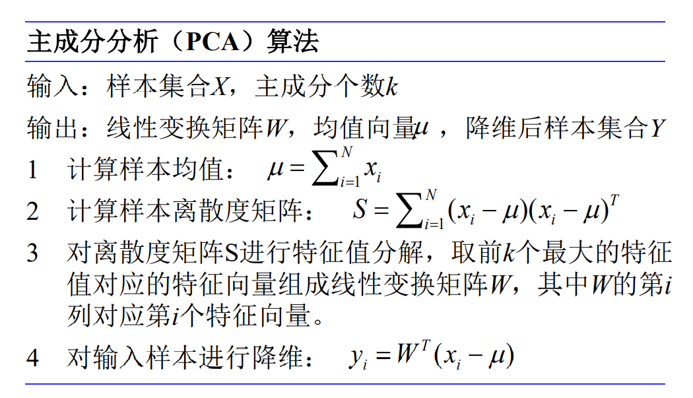目的：使用较少的新特征来重新表示原始的特征。
- 每个新特征都是原始特征的线性组合；
- 新特征按照重要性从大到小排序；
- 新特征之间相互不相关。
解释：主成分的选择
 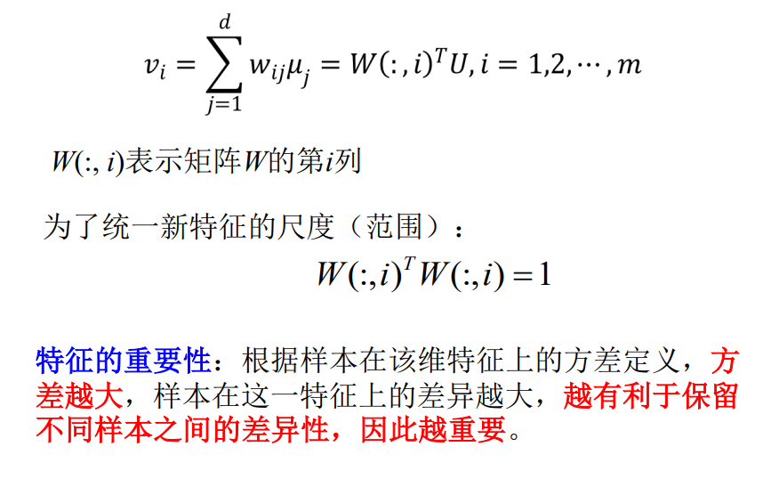 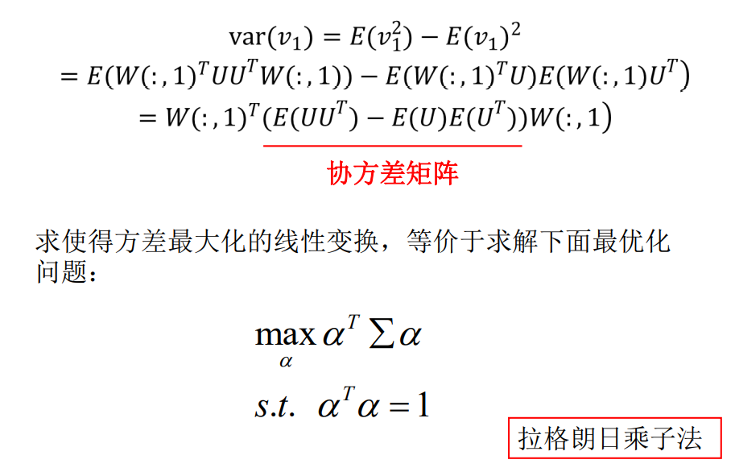 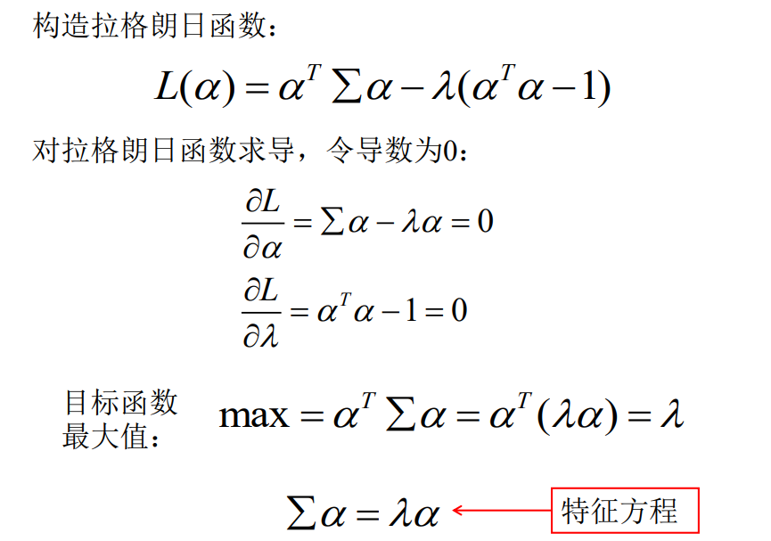 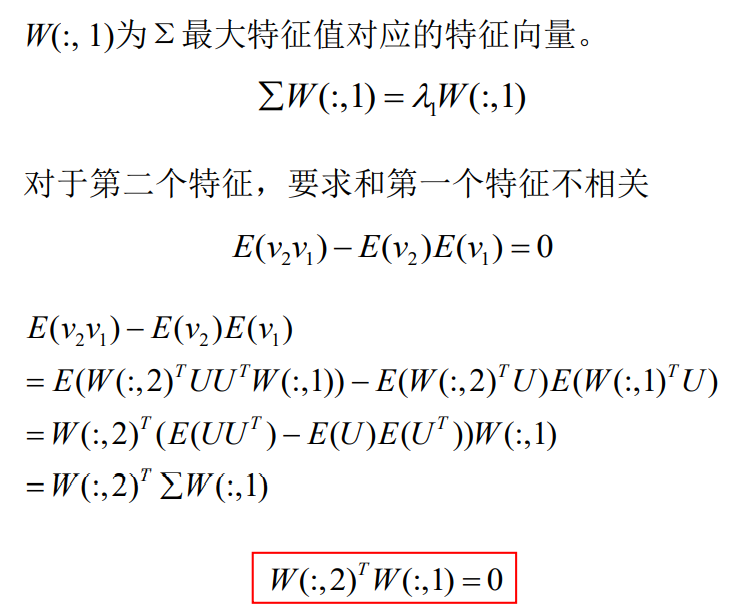 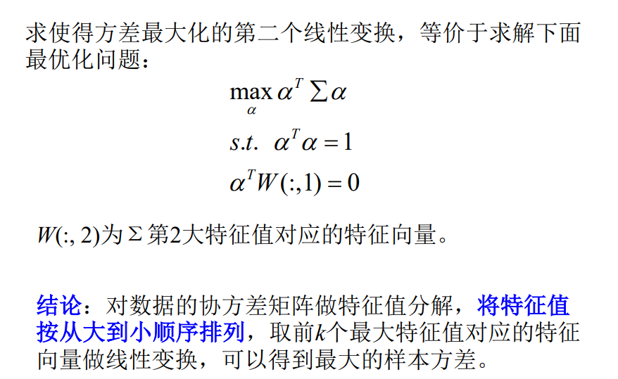 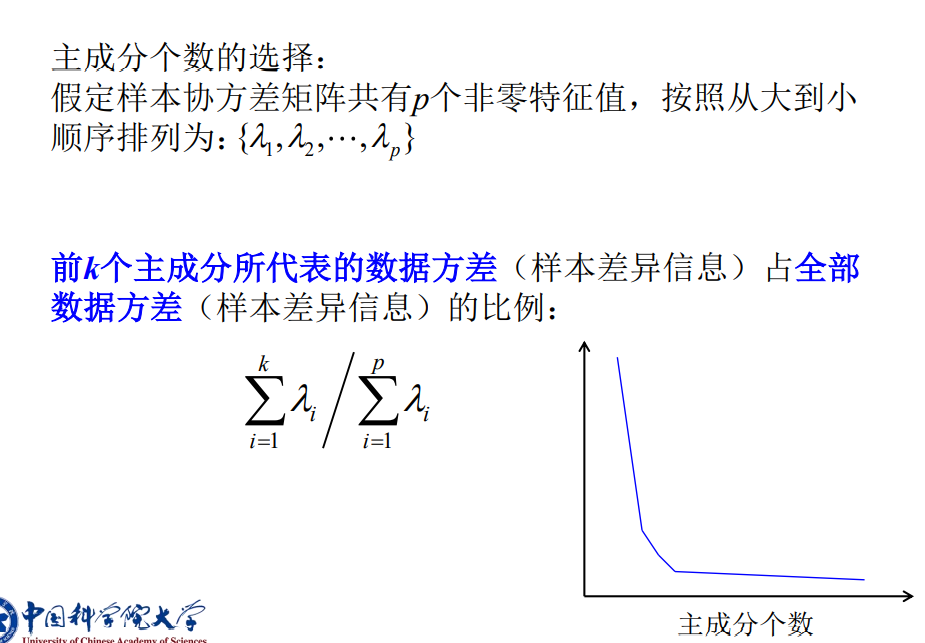
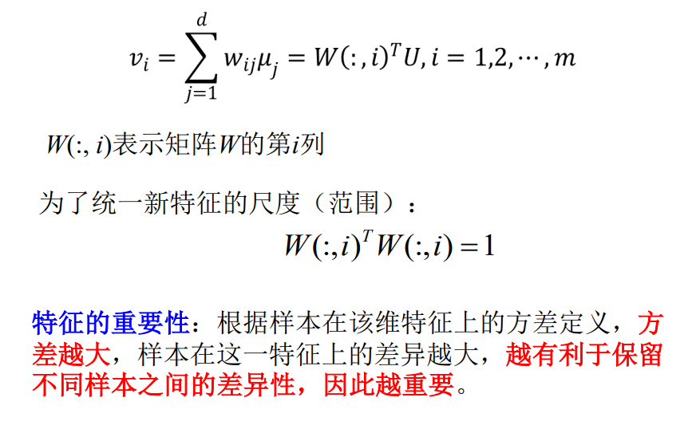 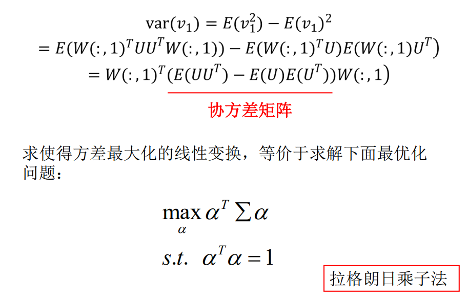 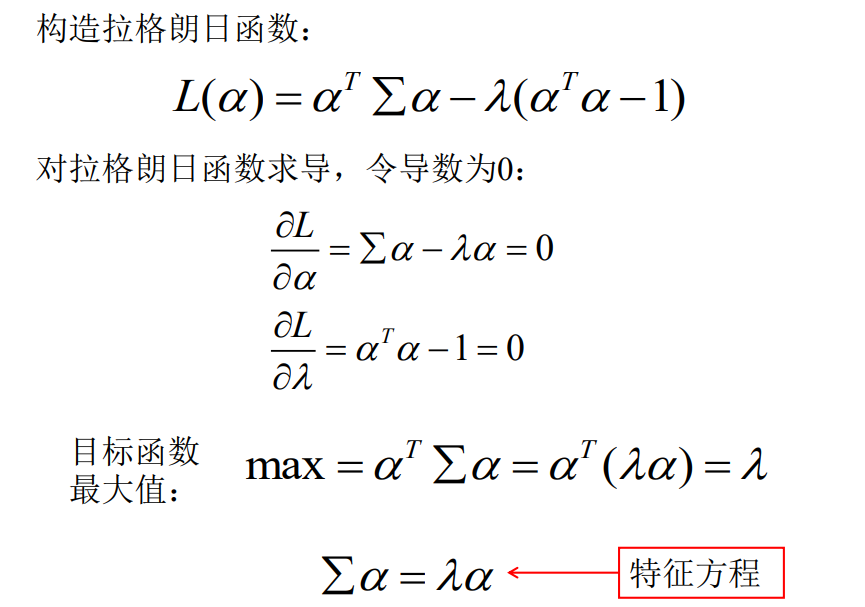 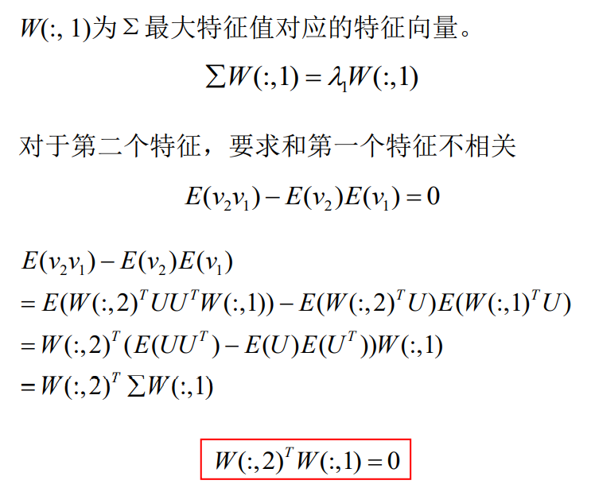 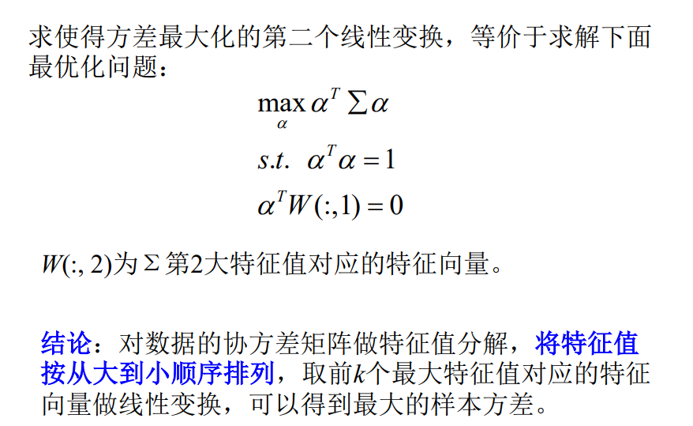 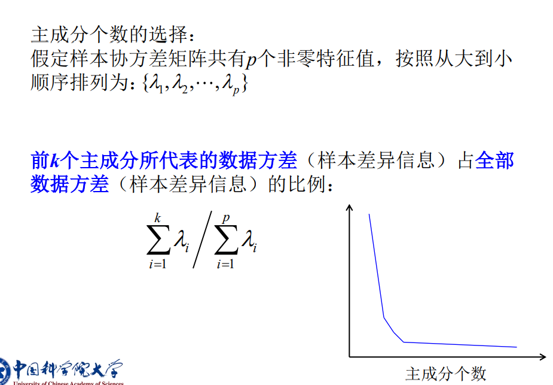 # 应用
降维：直接对所有数据使用PCA，便于数据分析， 如聚类、分类、可视化等。
数据去噪：对数据使用PCA，将协方差矩阵Σ特征 值很小的成分置为0（取特征值较大的前k个主成分）， 反变换得到去噪后原始数据。
人脸识别（eigenfaces）：使用PCA对人脸图像进 行特征变换，再利用kNN在特征空间进行人脸识别。
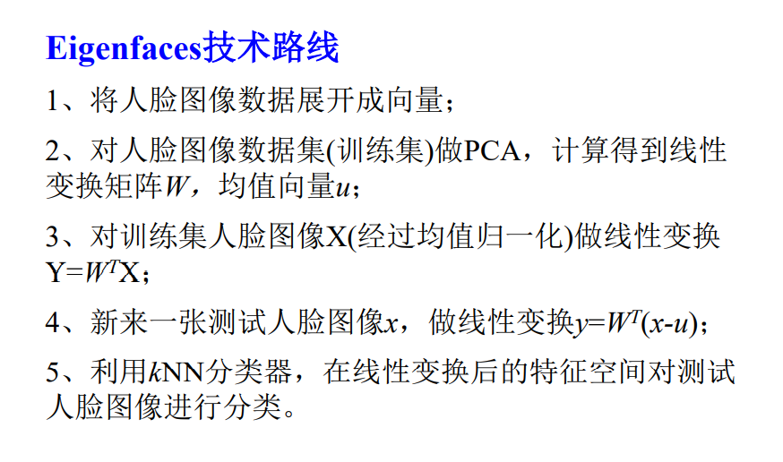
特征值分解技巧：
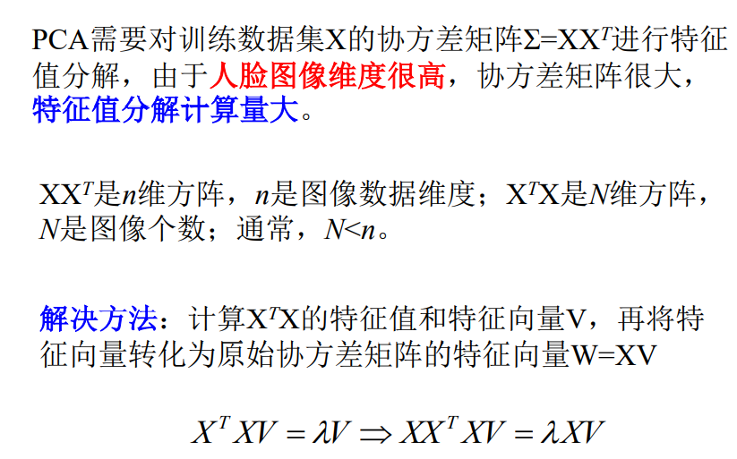即可以利用的特征值和特征向量V，来表达的特征向量。
# 核主成分分析（KPCA）
基本思想：对样本进行非线性变换，在变换空间进 行主成分分析。等价于在原始空间进行非线性主成分分析。
核心技术：核技巧，绕过复杂的非线性变换环节。
问题：
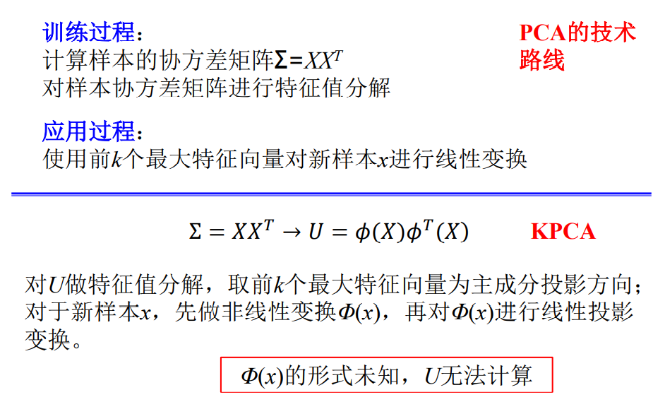 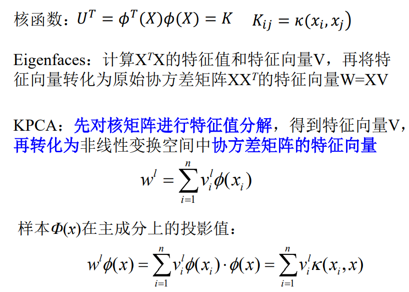 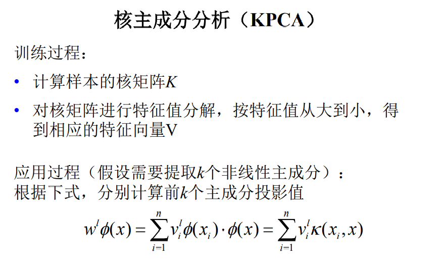# 线性判别分析
需要样本类别标签，监督学习方法。使得变换后低维空间利于分类。
线性判别分析，又称Fisher判别分析，是一种监督 的子空间分析方法。
采用Fisher判别准则，进行特征变换：寻找线性变 换矩阵，使得变换后特征的类内散度尽可能小， 同时类间散度尽可能大。
作用：将原始的高维数据变换至一个低维的特征空间， 以最大化数据的线性可分性，在低维特征空间进行分析， 提高分类性能。
原理：
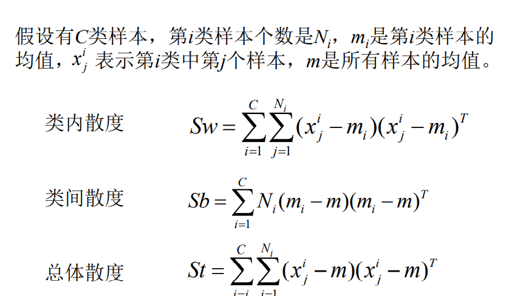 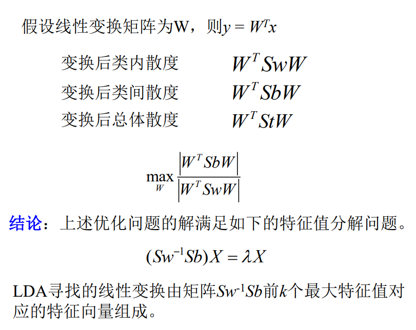# 算法流程
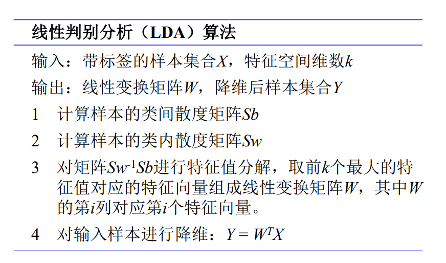# 应用
- LDA方法可以和PCA相结合使用
- 使用PCA对原始数据降维
- 对降维后数据，应用LDA，变换至最大线性可分特征空间
- 使用kNN进行分类